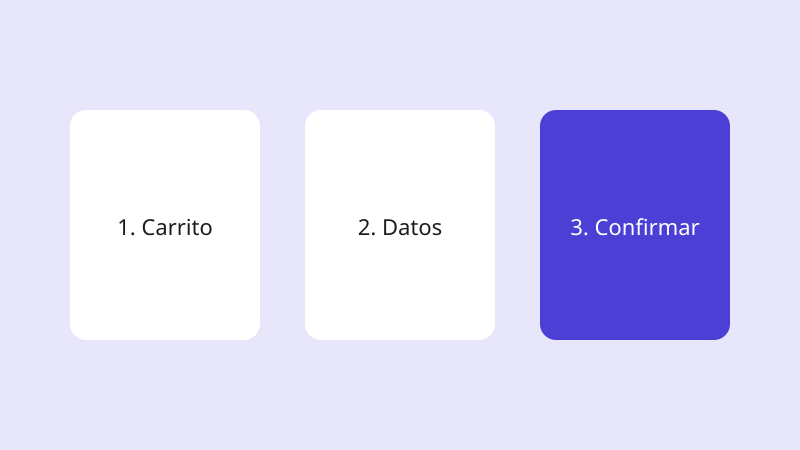

Ficha de caso
Rediseño del flujo de pago
Por Tu nombre · Diseño de producto

Problema
El pago tenía cinco pantallas y muchas personas abandonaban la compra en el paso de datos de envío.
Decisión de diseño
Agrupé los datos de envío y de pago en una sola pantalla y dejé la confirmación como último paso, con el total siempre visible.
Qué aprendí
Mostrar el total desde el inicio reduce las dudas antes de pagar.